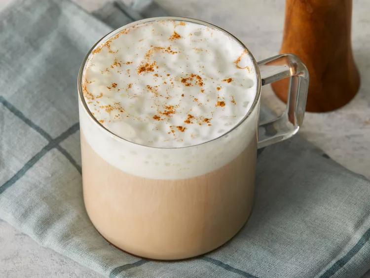
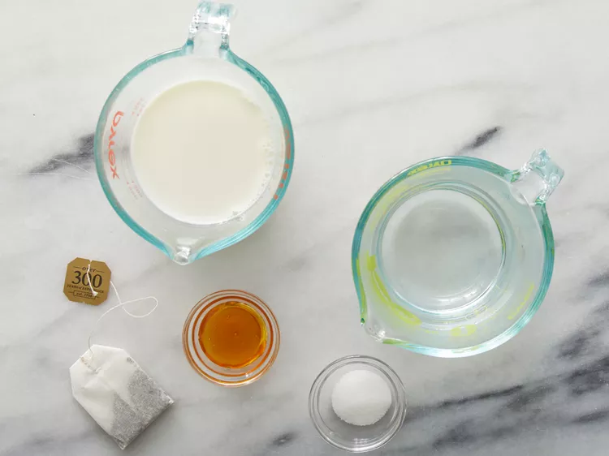
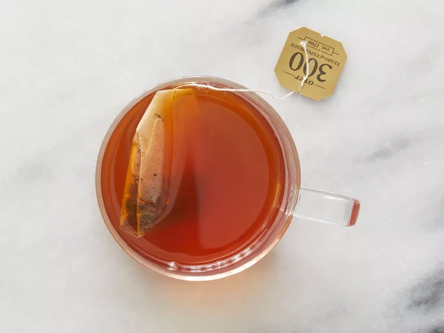
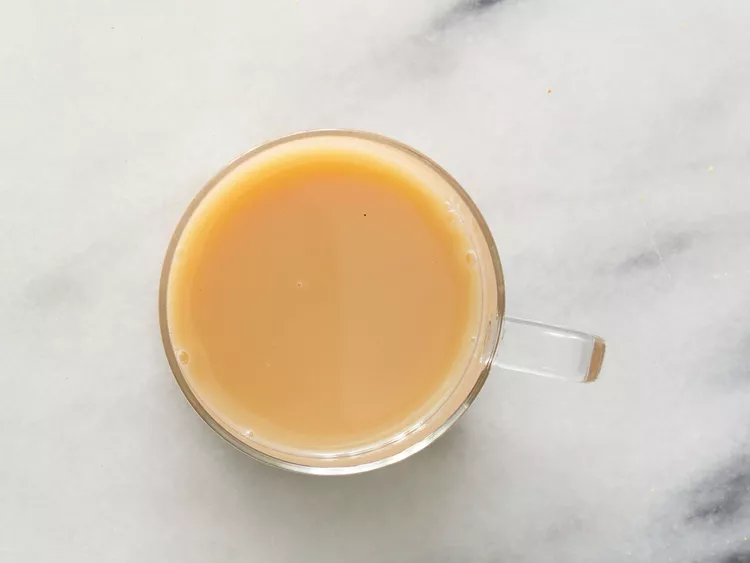

Go Back
Source of Recipe
CHAI TEA LATTE

Description
This milky chai latte is really similar to the brand Oregon Chai. Simply delicious either hot or iced! This will save you more money than buying the chai. In India, each family has their own way of making it, so you should experiment to find your favorite blend.
Ingredients for One Serving
- ¾ cup boiling water
- 1 chai tea bag
- 1 ½ teaspoons honey
- 1 teaspoon white sugar
- ¾ cup milk
Steps
- Gather all ingredients.

- Pour boiling water over chai tea bag in a mug; let steep 4 to 6 minutes. Remove and discard tea bag.

- Stir honey and sugar into tea to dissolve. Stir milk through tea to serve.

Go Back